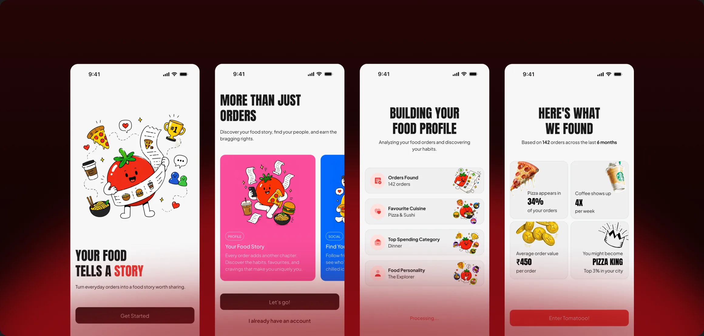
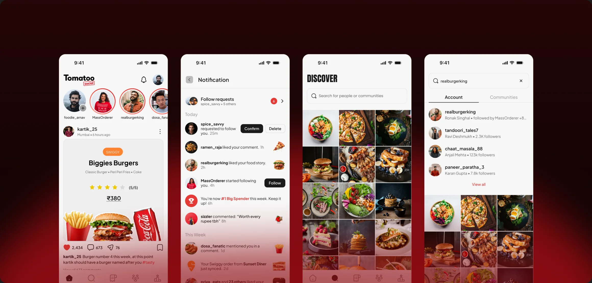
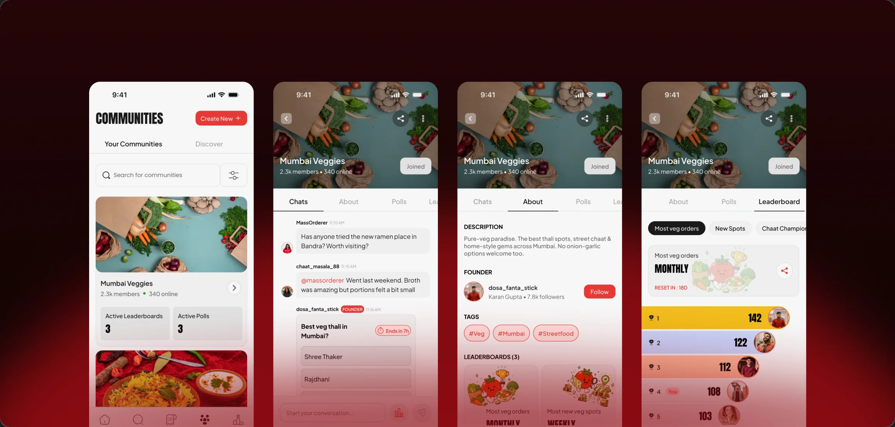
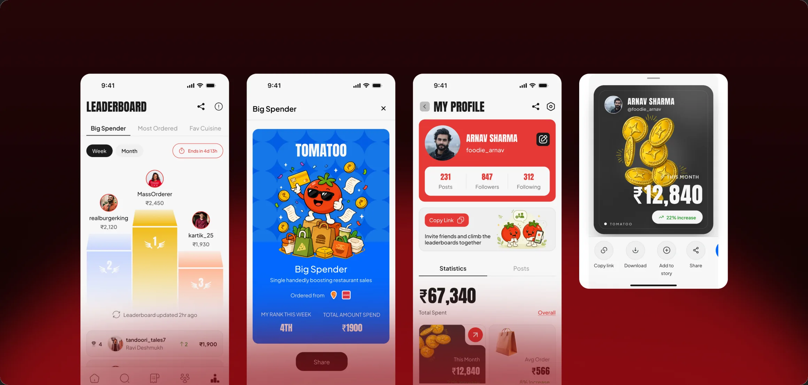

Tomatoo

The Problem
Food is one of the most social things in a person’s life, yet food delivery is one of the least social products they use. There was nowhere for your real orders to become something worth sharing.
People order food several times a week, but the moment it arrives the experience disappears, no memory, no sharing, no sense of taste identity. The discovery that does happen (what to eat, where to order) lives on Instagram and word of mouth, disconnected from the ordering data that could power it.

Context & Constraints
Business Goals:
- Build an engagement/retention layer on existing delivery behaviour, not a new delivery app.
- Grow through sharing (food stories) and community, not ad spend.
User Needs:
- Remember and show off meals, discover food through people they trust, find their taste tribe, and feel rewarded for what they already do.
Technical & platform constraints:
- Mobile first, iOS native form factor (402×874 iPhone frames).
- No delivery infrastructure of our own, everything hangs off third party order import (Swiggy, Zomato, later Toing) plus Google sign in. Orders are the source of truth that powers stories, spend totals and the leaderboard.
- No published design library, the system was built locally from scratch (one variable collection, local text styles, Vuesax icons, iOS 18 chrome).
- India first legal context (DPDP Act 2023) shaped the privacy, consent and data retention surfaces.

Role & Ownership
This was a real client engagement for an early stage startup, and I was the sole designer on it. I owned the product design from thesis to handoff: the local design system (tokens, type ramp, component recipes), every screen across onboarding, home feed, stories and reels, orders, leaderboard, communities and settings, the full error and empty state layer, and the interactive prototype flows in Figma.
I also ran the client relationship myself, gathering the brief, presenting the work, and turning their feedback into design decisions. A senior designer supervised and cleared my doubts, but the thesis, the system, the screens and the client conversations were mine.

Depth of Craft
- Systemic error language: three consistent inline signals (red stroke + red helper text + disabled CTA), a snackbar recipe for overlays, and a mascot full screen pattern for connectivity/empty, applied uniformly, not guessed per screen.
- Edge cases as first class: OTP expired (neutral boxes, 00:00 timer) vs incorrect OTP (red boxes); city picker “no results” vs unsupported city; banner size/format limits; a tag counter that turns red at 6/6.
- Microcopy tuned to each case: every state says what went wrong and what to do next, from “Code expired. Request a new one.” to “Incorrect code. Please try again.”, never a generic “Something went wrong.”
- Systems thinking: tokenised colour/type/spacing, reusable row/card/snackbar recipes, and a responsive rule that nests (FILL row → FILL text + FIXED avatar).
- Content realism: real, face cropped portraits for avatars, platform badges on order/reel cards, and spend totals that tie the whole loop back to real order data.

Process
- Worked directly with the client in feedback rounds, presenting iterations and turning their input into concrete design decisions rather than guessing.
- Started from the product thesis and the “food story” metaphor, then mapped the five pillars, feed, stories/reels, orders, gamification, communities, into an 200+ screen flow.
- Built the design system alongside the screens, harvesting tokens from real screens rather than designing them in the abstract.
- Happy path first, then went deep on the unglamorous states: 40+ error and empty states, one screen per distinct validation case (username too short vs too long vs invalid vs taken are four separate screens, not one).

Decisions & Tradeoffs
- One screen per validation case rather than one screen with every possible message, so username too short, too long, invalid and taken are four separate frames. Trade off: forty plus states to build and maintain, in exchange for a handoff where every edge case is drawn, not left for a developer to guess.
- Error feedback chosen by context instead of one blanket rule, inline helper text on dense forms, a floating banner or snackbar only over full bleed photos where inline text cannot be read. Trade off: less pattern uniformity across the app, in exchange for an error that stays legible wherever it appears.
- Anton for display and Plus Jakarta Sans for everything else, with a single red as the only accent. Trade off: Anton uppercase is loud and harder to read in long runs, so it is confined to titles and the wordmark, and red is rationed so it keeps its meaning.
- An off white canvas with light grey cards instead of pure white. Trade off: lower raw contrast than white, in exchange for a softer, more editorial surface that lets the food photography and the red accent carry the energy.

Impact
Outcomes so far:
- The client reviewed and approved the design direction.
- Their feedback was gathered across several rounds and incorporated into the work.
- The design has been handed over to the development team and is now being built.
- The client’s next step is to grow Tomatoo into a paid health consultation service, offering personalised diet plans on top of the social and ordering layer.
What I delivered:
- A complete, coherent product: 200+ core screens + 40+ error/empty states + full settings, legal and onboarding flows, all on one design system.
- A responsive system verified to reflow cleanly at 2×+ the base width.
- Wired, clickable prototype flows, follow requests, settings navigation, order scan loading, and the marketing mockups.
How success would be measured:
- Activation: % of users completing order account connection during onboarding.
- Engagement: stories posted per user per week; DAU/WAU stickiness.
- Social: follow + community join rate; leaderboard participation.
- Retention: D7 / D30.